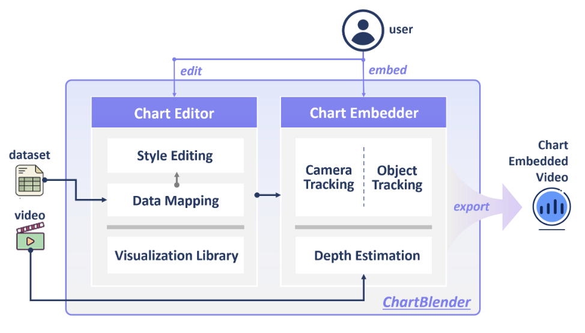
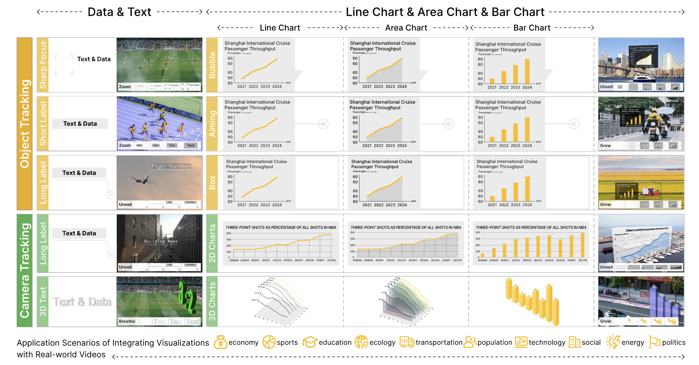
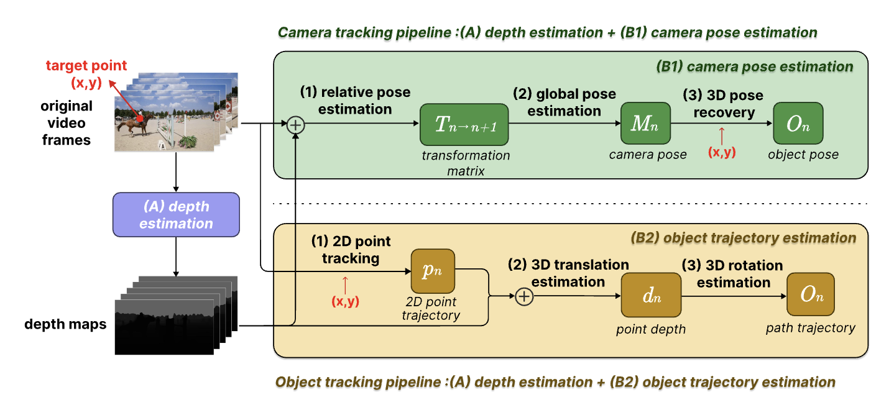

Intelligent Big Data Visualization Lab, Tongji University
Embedded data visualizations have emerged as a powerful narrative medium for conveying complex information within video footage. However, creating such content remains labor-intensive, as existing workflows rely on manual frame-by-frame adjustments to ensure spatial and temporal consistency. To address these challenges, we present ChartBlender, an interactive authoring system designed to streamline the creation, embedding, and automatic synchronization of data visualizations within video scenes.
We develop a tracking pipeline that supports both object tracking and camera tracking, ensuring robust alignment of visualizations with dynamic video content. To maintain visual clarity and aesthetic coherence, we also explore the design space of video-suited visualizations and develop a library of customizable templates optimized for video embedding. We evaluated ChartBlender through two controlled experiments and expert interviews with five domain experts. Results show that our system enables accurate synchronization and accelerates the production of data-driven videos.
Watch how ChartBlender embeds and synchronizes data visualizations in real-world footage.
End-to-end authoring tool with one-click anchor, 3D adjustment, and real-time in-context preview for creating data-driven videos.
Characterization of video-suited visualizations derived from 200 professional videos, covering 5 chart types and 2 motion modes.
Two quantitative tracking experiments on standard benchmarks plus interviews with 5 professional data journalists.
ChartBlender consists of two modules — the Chart Editor and Chart Embedder — that together cover the full authoring workflow.

Figure 2. The ChartBlender system interface: (1) Chart View for creating and editing visualizations, (2) Video View for embedding charts and previewing results, (3) Timeline View for managing chart segments.
Upload dataset via drag-and-drop; raw data displayed inline
Select chart type (bar, line, area, text, 3D) and map data fields to visual channels
Adjust style properties — color, line thickness, theme — with immediate preview
One-click anchor: click any pixel to specify the tracking point
Choose tracking mode: Camera Tracking (static scene) or Object Tracking (moving target)
3D pan / zoom / rotate for fine-grained spatial placement
Multi-chart timeline: add, delete, trim segments independently
A corpus study of 200 professional videos revealed design patterns across 5 chart types, 2 motion modes, and subtle temporal animation behaviors.

Figure 3. The design space of video-suited visualizations organized along three dimensions: chart type, motion mode (object/camera tracking), and temporal behavior (animation scheme and on-screen duration).
A two-stage pipeline — depth estimation then pose/trajectory estimation — provides perspective-consistent 3D chart placement without camera metadata.

Figure 4. The two pipelines of the Chart Embedder. Camera tracking: depth estimation + camera pose estimation. Object tracking: depth estimation + object trajectory estimation (2D tracking → 3D translation → 3D rotation).
Four real-world examples showing ChartBlender across different scenarios — sports, journalism, documentary, and social media.
We release the video corpus, visualization templates, and evaluation code to support future research.
200 professionally produced chart-in-video examples across sports, journalism, documentary, and social media, annotated with chart type, motion mode, and temporal behavior.
If ChartBlender is useful for your research, please cite:
@article{he2025chartblender, title = {ChartBlender: An Interactive System for Authoring and Synchronizing Visualization Charts in Video}, author = {He, Yi and Liu, Yuqi and Li, Chenpu and Chen, Ruoyan and Chen, Chuer and Dang, Shengqi and Cao, Nan}, journal = {IEEE VIS}, year = {2025}, }